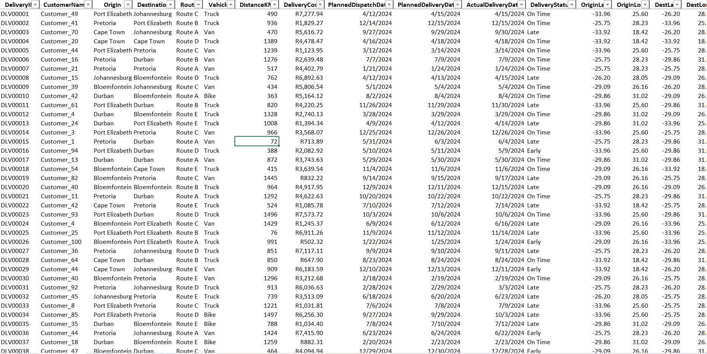
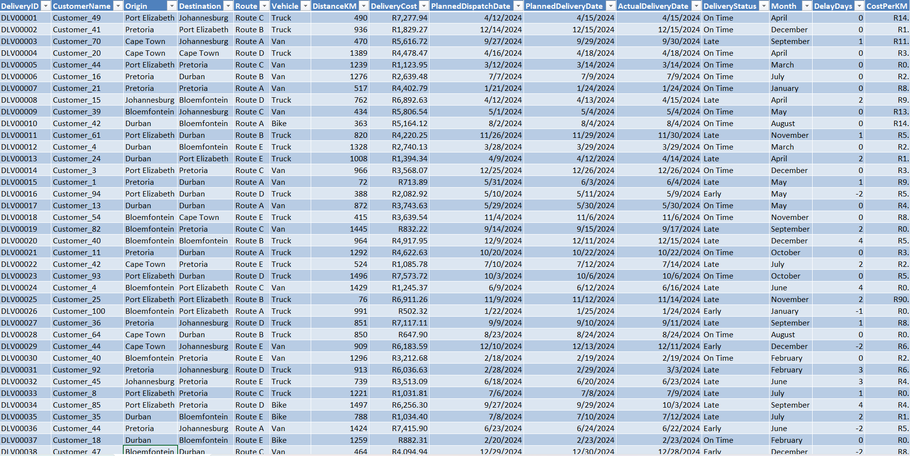
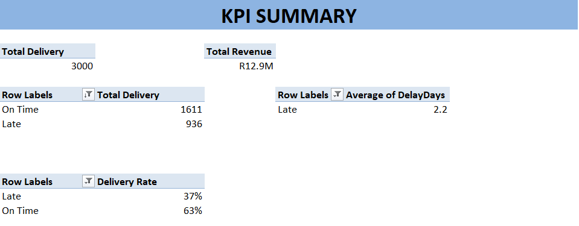

What This Project Is About
This project was built as a portfolio case study targeting logistics and transport companies across Nigeria and Africa. Using a structured operational dataset, the goal was to go beyond surface-level reporting — identifying specific, actionable problems a logistics company could solve with better data practices.
The entire analysis was conducted in Microsoft Excel using PivotTables, PivotCharts, structured formulas, and an interactive slicer-driven dashboard — demonstrating what a skilled data analyst can extract from operational data without writing a single line of code.

How the Analysis Was Built
The project followed a structured, reproducible six-step workflow — from raw data preparation through to an interactive dashboard designed for non-technical stakeholders.
Data Preparation & Table Structuring
The Transformed dataset was converted into a named Excel Table (LogisticsData) enabling structured column references. Three helper columns were added:
This transformed raw dates into measurable dimensions — enabling monthly trend and delay severity analysis across all 3,000 records.

KPI Summary
A dedicated KPI sheet computed top-line business metrics dynamically using Pivot Tables
These cells feed the dashboard KPI cards live — updating automatically when source data changes.

Route Performance Analysis
A PivotTable was built with Route as rows and Delivery Status as columns, counting each delivery outcome per route. A Clustered Bar Chart visualised the late vs. on-time split clearly.

Vehicle Efficiency Analysis
The same PivotTable structure was applied at the vehicle level. Also, AverageCost Per KM metric was calculated to surface true efficiency — revealing Bikes as the most expensive vehicle despite lowest usage.

Monthly Trend Analysis
A monthly late rate was computed using COUNTIFS then plotted alongside delivery volume as a Combo Chart — revealing whether demand peaks correlate with quality failures.

Interactive Dashboard Assembly
All charts were moved to a single dashboard sheet. KPI cards were linked live to the KPI Summary. Slicers for Route, Vehicle, and Delivery Status were connected to all PivotTables via Report Connections — enabling one-click filtering across every visual simultaneously.